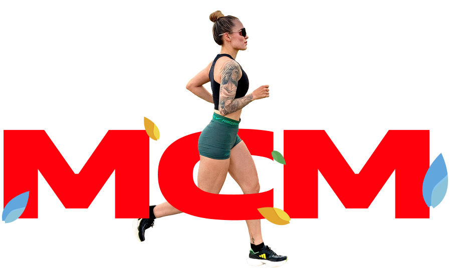
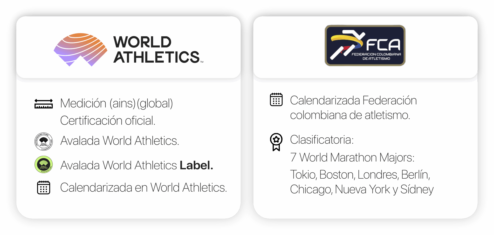

Fecha
22 de Marzo, 2027

La primera maratón internacional del Oriente Colombiano.
Cada kilómetro, una experiencia única.
Sobre el evento
La Maratón Cúcuta Metropolitana te lleva por los lugares más emblemáticos de nuestra región — un recorrido que conecta corredores con la cultura, la identidad y el espíritu del Oriente Colombiano.
22 de Marzo, 2027
Cúcuta, Norte de Santander
Chip oficial desde 10K
Kit + medalla para todos
Inscríbete
Ideal para tu primera carrera. Ritmo relajado y ambiente festivo.
La distancia favorita: exigente pero alcanzable con buen entreno.
El paso natural entre el 10K y la media maratón.
El clásico de 21K: exigencia, comunidad y una meta inolvidable.
Los 42 kilómetros completos. Tu mayor reto en las calles de Cúcuta.
Avales
Certificada y avalada por los organismos más importantes del atletismo mundial.

Rutas
Selecciona tu distancia para explorar la ruta.
Mapa interactivo disponible en el sitio oficial
Ver mapa completoContacto
Estamos aquí para ayudarte.